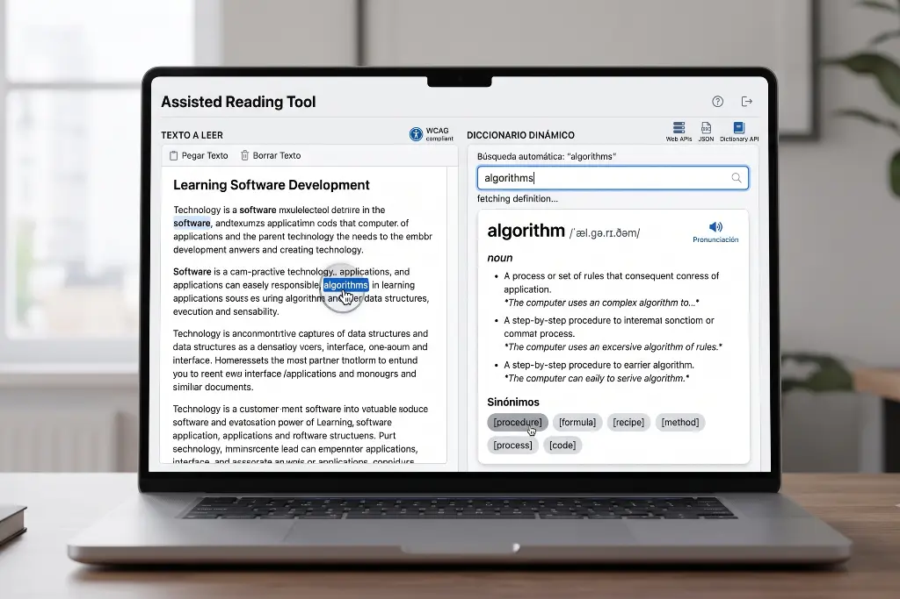

TakTaim Reader
Master English Reading Without Distractions
TakTaim Reader connects customized texts with a dynamic lookup panel to bridge the gap between reading, listening, and active vocabulary acquisition.

How It Works
- Choose or Insert Your Text: Open the Reader tab and select a pre-loaded text from your catalog or navigate to the Editor tab to create your own formatted article.
- Highlight Any Word: While reading, simply click and highlight any unfamiliar English word directly inside the text box.
- Instant Lookup: The dynamic dictionary on the right automatically searches the word using the Free Dictionary API and MyMemory Translation API.
- Listen & Explore: Click the speaker icon (🔊) to hear authentic pronunciation via Web Speech Synthesis, review definitions, and click on synonyms to explore related vocabulary instantly.
Key Learning Benefits
Reading Comprehension
Eliminate friction and maintain narrative flow. You never have to leave your reading tab or open external search engines to look up meanings.
Vocabulary Acquisition
Discover words in context along with interactive synonym chips that allow you to explore connected vocabulary with a single click.
Listening & Pronunciation
Train your ear with native browser speech playback and learn international phonetic transcriptions (IPA) to refine your oral fluency.
Spanish Translation
Get instant Spanish equivalents alongside full English definitions to solidify comprehension while preserving total immersion.